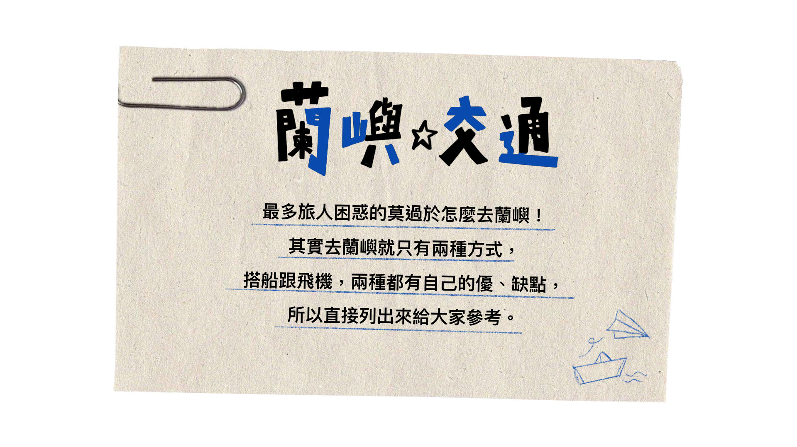

朗島部落

I-raraley指有禮貌，道路還沒開通前，
朗島是東清部落和椰油部落之居民的必經之地，
因此朗島部落見人就打招呼的親切行為，便被稱做有禮貌的部落。
在蘭嶼六個部落中領域是最大的，部落比其他部落有較多的奇岩異石。
椰油部落

Yayo，指有豐富的食物之地，商家林立，在蘭嶼六個部落中最熱鬧。
椰油部落也是蘭嶼地區的行政中心，及貨物進出口的主要運輸要道，
為島上主要的集散中心。背山面海，
居住人口約有30%的非達悟族人在此生活，
以外來投資者及公務體系人員為主，因此和其他部落生活樣貌有所不同。
東清部落

位在蘭嶼東北岸，是台灣第一道曙光照耀的地方，
部落前方美麗海灣的灘頭是祭儀活動的地點，
天然珊瑚礁岩是部落婦女採集海菜之地，
海域則是男人從事海上活動之地，
當地人常說：「山林是我們的倉庫，海洋是我們的冰箱」以表感恩之情。
紅頭部落

飛魚傳說的起源—紅頭部落，位在蘭嶼的西南方，
傳統的地界是自現在的核廢廠至紅頭溪，背山面海，坡度較其他部落大。
八代灣和小蘭嶼是部落主要海洋漁獵範圍。
因距港口與機場近，所以對外開放性較高，移入的人口也較多。
部落內的蘭嶼鄉衛生所為守護蘭嶼人健康的唯一單位，
唯一的郵局也在此部落，爭議最大的核廢料貯存場也在紅頭部落傳統界線的末端。

搭乘客輪去蘭嶼去蘭嶼搭船是最多旅人的選項，蘭嶼船班多、
可選擇恆春/台東搭船、蘭嶼船票比較下來也經濟實惠，不過耗時跟容易暈船倒是真的。
從台東富岡漁港前往蘭嶼的客輪有金星八號、綠島之星號可以選擇，
航行時間端視海象狀況，約2~2.5小時即可抵達蘭嶼。
旺季時蘭嶼回程台東的船班則多會途經綠島為「三角航線」，約加30~40分鐘航程
從後壁湖遊艇港前往蘭嶼的客輪有金星3號、綠島之星3號，
航程約需2小時左右抵達蘭嶼，
建議從台灣西部出發的朋友可直接搭火車或高鐵至高雄後，
再共乘接駁車（需預約）到恆春的後壁湖碼頭前往蘭嶼。